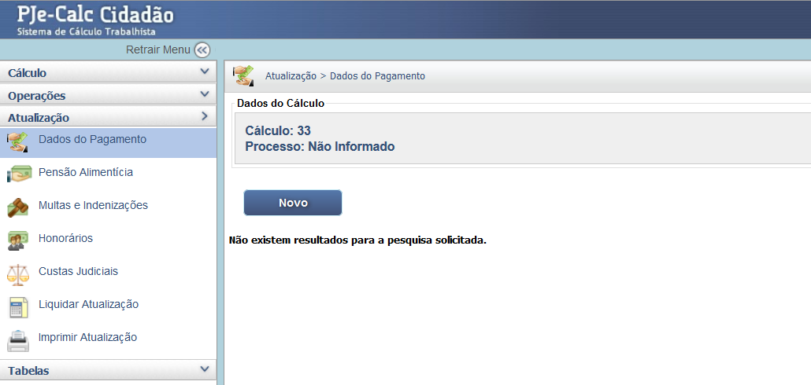
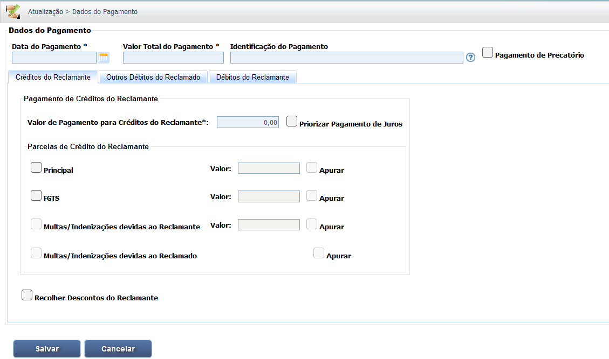
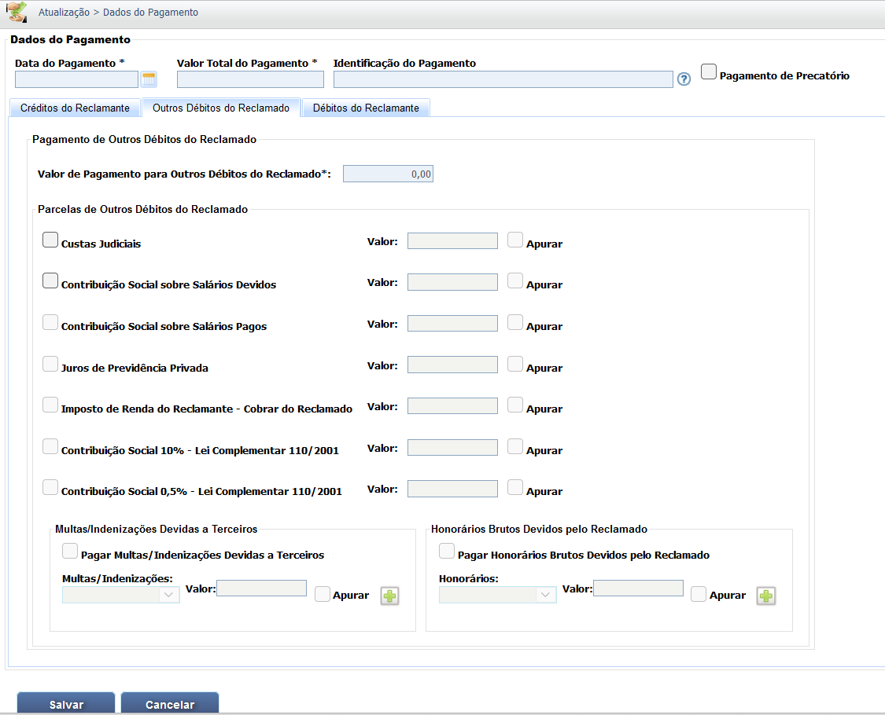
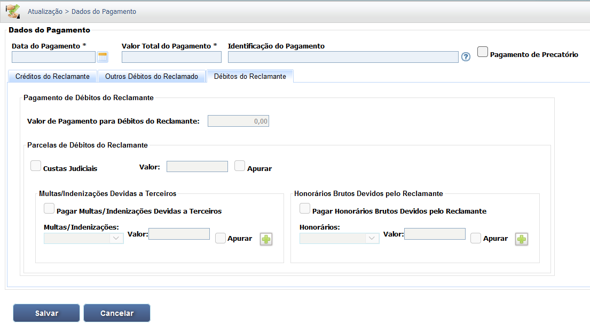

Manual Interativo de Cálculos Trabalhistas
Um guia completo e interativo para entender os cálculos na esfera judicial trabalhista.
Lançamento e Abatimento de Valores Pagos (Atualização)
O módulo Dados do Pagamento é essencial para registrar valores que já foram pagos pelo devedor após o início da execução, permitindo o cálculo do saldo remanescente a ser executado. O registro deve ser feito com precisão para evitar duplicidade na cobrança.
1. Inclusão de um Novo Pagamento
Na tela inicial do módulo "Dados do Pagamento" (acessado via Atualização), clique no botão "Novo" para registrar um pagamento parcial ou total realizado pelo devedor.
2. Abas de Detalhamento e Dados Principais
Ao inserir um novo pagamento, preencha a Data do Pagamento, o Valor Total do Pagamento e uma Identificação do Pagamento. O detalhamento do que foi pago é feito nas abas: Créditos do Reclamante, Outros Débitos do Reclamado e Débitos do Reclamante.
2.1. Créditos do Reclamante (Pagamento ao Trabalhador)
Esta aba registra o valor pago diretamente ao reclamante. É possível detalhar o pagamento entre Principal, FGTS e Multas/Indenizações, além de priorizar o pagamento dos juros.
2.2. Outros Débitos do Reclamado (Pagamento de Encargos)
Esta aba registra o pagamento de encargos devidos pelo reclamado a terceiros (e que não são deduzidos do reclamante), como: Custas Judiciais, Contribuições Sociais (sobre salários devidos e pagos) e Imposto de Renda a Cobrar do Reclamado. Também permite registrar o pagamento de multas/indenizações devidas a terceiros e honorários brutos devidos pelo reclamado.
2.3. Débitos do Reclamante (Pagamento de Deduções)
Esta aba registra o pagamento de débitos que seriam descontados do reclamante, mas foram pagos à parte, como Custas Judiciais (parte do reclamante), Multas/Indenizações devidas a terceiros e Honorários Brutos devidos pelo Reclamante.
Após detalhar o pagamento nas abas, clique em "Salvar". É obrigatório retornar ao menu e clicar em "Liquidar Atualização" para que o abatimento seja processado e o saldo devedor recalculado.